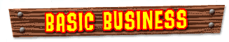
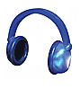
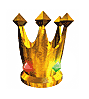

| 
|
|||
|  | Headphones replenish the number of times that the Kongs can play their instruments. |  | Crowns are earned in the Battle Arena (there are 10 in all) |
| The Nintendo Coin is used with the Rareware Coin to unlock the final key to K. Lumsy's Cage. Earn it by beating the original Donkey Kong game in Frantic Factory. | The Rareware Coin is used with the Nintendo Coin to unlock the final key to K. Lumsy's Cage. You can only get it after scoring 5,000 points in the old arcade game called Jetpack. | ||